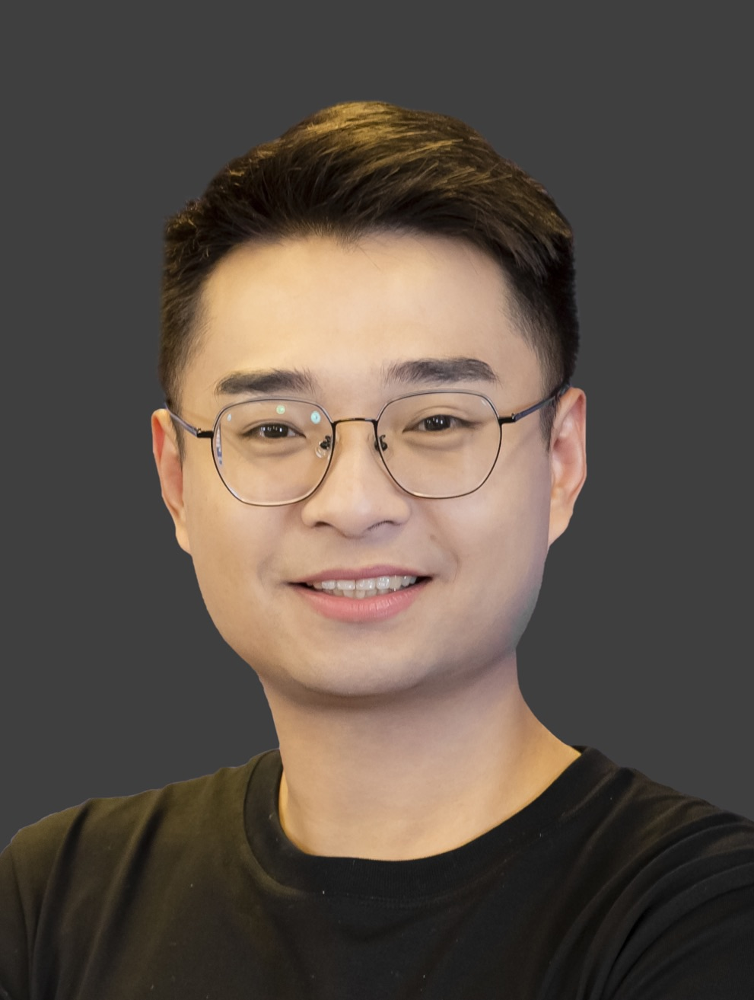

Rui Zhao is a Research Executive Director and the head of the Smart City R&D group from 2018 to present. He was the head of Financial Large Model group at SenseTime during 2024-2025. Prior to SenseTime, he was CTO and Chief Scientist of SenseNets, an affiliated venture with SenseTime, during 2015–2017.
He received his B.S. from the University of Science and Technology of China (USTC) in 2010, and his Ph.D. from The Chinese University of Hong Kong (CUHK) in 2015. His research interests include Agentic AI, Large Multimodal Models, and Self-supervised Representation Learning. He has nearly 20,000 Google Scholar citations and 200 publications.
He is best known for the earliest deep-learning research on person re-identification (ReID), which has had broad impact in the research community and accumulated substantial Google Scholar citations. At SenseTime, much of his work has focused on large-scale face recognition model training and head-to-head competition with leading industry players—helping the company stay competitive in a demanding market. He also advances large multimodal models from the lab to large-scale industrial deployment on real-world projects while building an agentic multimodal platform for agile long-tail vision solutions.
He is a recipient of the Top 0.5% ScholarGPS Ranking (2025), Top 2% Scientists worldwide by Stanford/Elsevier (2024), AI 2000 Most Influential Scholar in Computer Vision by AMiner (2022), Top 100 AI Chinese Young Scholars by Baidu (2022), the SAAI Science and Technology Progress Award (2022), Shenzhen May 1 Labor Medal (2022), Guangdong Science and Technology Progress Award First Prize (2020), Wu Wen Jun AI Award for Scientific and Technology Progress (2019), Black Sheep Award from SenseTime (2018, 1‰ award rate), Peacock Program Talent Award from Shenzhen Municipal Government (2016), Outstanding Reviewer Award from ECCV 2016, Doctoral Consortium Award from CVPR 2015, and Travel Award from ICCV 2013.
Recruiting: If you are interested in joining SenseTime as an intern or full-time researcher, please send your CV to zhaorui [at] sensetime.com. Candidates with strong publication records and self-motivation are preferred.
Journal Reviewer: T-PAMI, IJCV, TIP, TCSVT, TNNLS, T-ITS, SPL, IMAVIS, MVA
Conference Reviewer: CVPR, ICCV, ECCV, NeurIPS, ICLR, ACL, EMNLP, ACCV, ICPR
Program Committee: AAAI (2016–2018), ACCV 2014, BigMM 2015
Session Chair: AAAI 2026
Area Chair: AAAI 2026